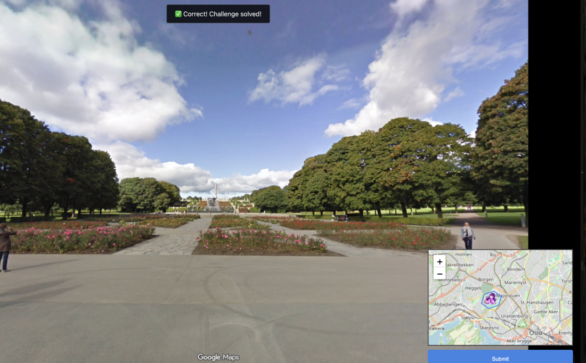
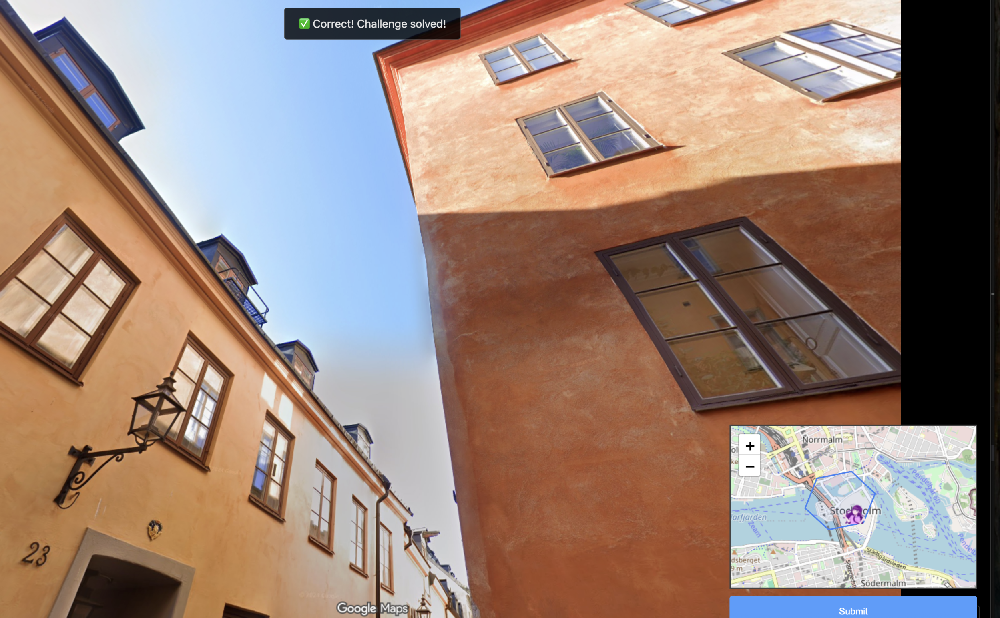
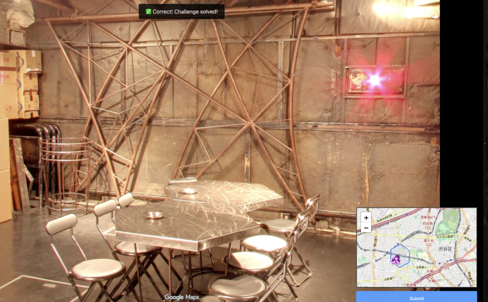
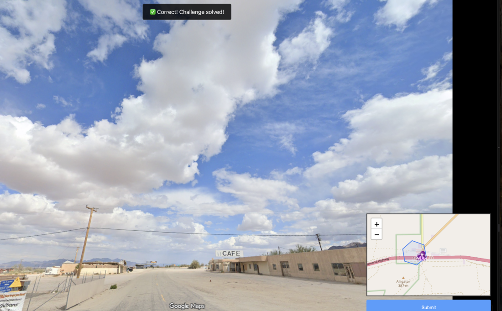
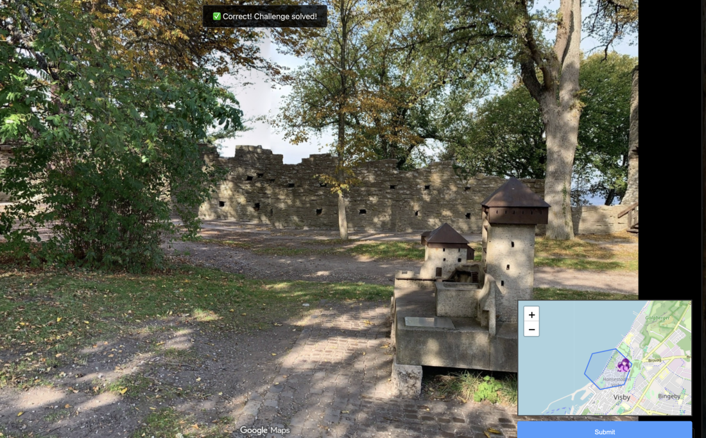
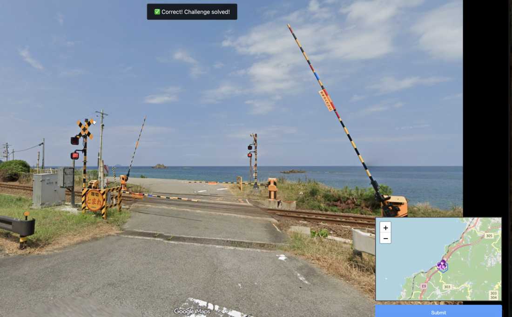
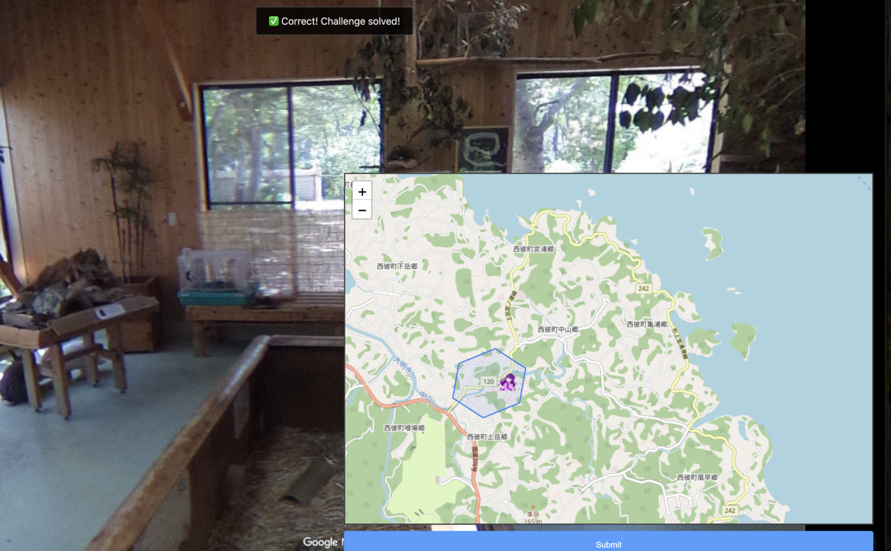
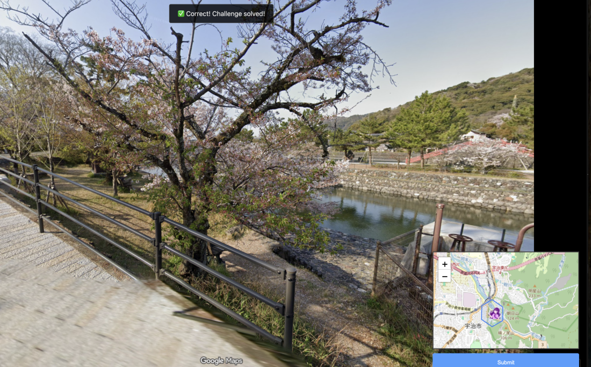
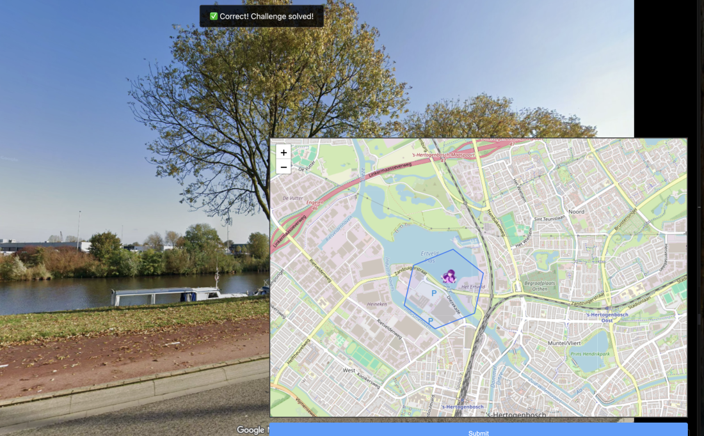

This challenge is a lot more fun when you're a weeb.
Basically a GeoGuessr / OSINT where we have to find 9 out of 10 locations from Google Maps images.
How I search for the places:
| Title | Solved Location | Google Maps |
|---|---|---|
| roe |  | 59.9263342, 10.7030935 |
| ongaku |  | 59.3240967, 18.0732994 |
| loner |  | 35.6615015, 139.6694974 |
| cafe |  | 33.7133345, -115.4033715 |
| diary |  | 57.6465181, 18.2966485 |
| ghost |  | 34.8274322, 131.9890578 |
| technology |  | 32.9888675, 129.7831613 |
| bench |  | 34.8895523, 135.8084066 |
| punchdrunk |  | 51.7002551, 5.2929103 |
Once we solved 9 / 10 locations, we are given the flag for osint/weebbolt.
Flag: osu{https://i.ibb.co/xTx6Nns/image.png}